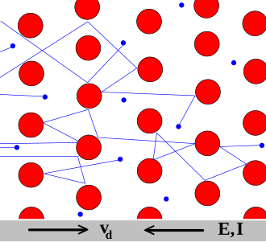
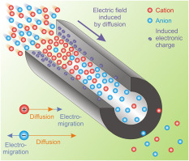

Voltage and current, the secondary electric entities, derive directly from charge, the primary entity, and (except time) no external entity is used. In contrast, when deriving resistance or conductance, one measures how the tested object relates to electricity. At this point comes to the light the meaning of E. Schrödinger’s warning about how do we test in physics laboratories. Although physics knows (based on their electric behavior) conductors, insulators and semiconductors, the characteristics of the material under testing is never mismatched into electrical terms. Paper [106] discusses why introducing a fundamental circuit element (the memristor) led to decades-long confusion, when attempting to introduce new laws of electicity. Introducing neuron (in the form of equivalent circuits where the ”biological matter” changes electric characteristics without any causality), that changes the rules of the game in electricity, has led to similar confusion. Physics provides examples when the relation of voltage and current seems to change and deviate from the Ohmic case. However, the first principle of energy conservation provides a hint to the correct interpretation. In physics, the energy and charge conserves (instead of current as [18], page 9, claimed), so we could introduce capacitive and inductive current, capacitive and inductive energy.
When those secondary entities interact with some macroscopic material, their relation to that material defines a feature, such as dielectricity or resistance. Those ternary entities manifest (i.e., are measurable) only when charge is present. Experience shows that, in the presence of electric potential, different media show different resistance against transferring charges, so we define resistance/conductance as one of the media’s macroscopic features (which is connected to microscopic features by Stokes’s Law). There is a crucial difference between the current propagation’s mechanisms in solids and in biological materials.
| Solid state | Ion channel |
|---|---|
|  |  |
| Current conveyed by electrons in solids | Current conveyed by ions in ion channel |
| Ohm’s law | [58] |
As we derive in Eq.(2.28), we can define a current for electrons and ions moving in an external force field, but the physical background in the two cases are entirely different. The technical current direction is opposite with the flow of electrons (and negative ions) but agrees with the direction of positive ions. The ions are much heavier than electrons, and even they can combine in electrolytes with water molecules, so their mass ratio can reach the order of . The charge propagation mechanism is entirely different (see also Fig. 2.3). As the Drude model describes, in solids, electrons (shown in the figure in blue) constantly bounce among heavier, stationary crystal ions (shown in red). The Drude model treats electrons like pinballs bouncing among the ions that make up the structure of the material. With each collision, though, the electron is deflected in a random direction with a velocity that is much larger than the velocity gained by the electric field. The net result is that electrons take a zigzag path due to the collisions, but generally drift in a direction opposing the electric field. Important, that the collisions are inelastic, so the electrons lose (most of) their energy. The energy is absorbed by the solid’s gridpoints, which later is released in form of heat. The process is irreversible.
In biological matter, ions convey electricity. So called ion channels are used for the transfer. Here diffusion and electromigration takes place, by orders of magnitude different speeds. The ions traverse typically without collision, under the effect of an electric field. The process is reversible. See also section 1.9.2.
When measuring resistance by dividing the measured values of voltage and current, a quantity of dimension resistance or conductance can be derived. Measuring those two charge-related characteristics requires performing two independent measurements, using two independent measuring devices; furthermore, assuring that one uses matching values (measured simultaneously) for the calculation. This is why, for comfort, resistance/conductance measuring devices have been developed and are in use (for their Of course, even that instrument cannot measure directly the ratio of those two secondary quantities, it makes (a little and forgivable) cheating. It reduces the measurement to measuring current by applying a little voltage (of known value) to the device under test, and displays the calculated result in units of resistance/conductance. The device uses the differential form of deriving the current: measures voltage and current at the same time. Here comes into the play the cheating: instead of actually measuring the voltage, the device uses voltage measured earlier and current value measured at the time of measurement. In the case of ’instant interaction’, the two measurement are simultaneous. The procedure is anyhow an invasion into the circuit, but (when used with care and knowing how the device works) perfect for performing a simplified and bequem measurement. When implemented with modern technology, in most cases the unwanted offset does not have significant effect. However, in biology, the ’service current’ needed for the measurement is in the range of the currents due to biological effects, and can bias measured values.
Two more kinds of issues come to the light when measuring in biological circuits. As we mentioned, although the measurement device works with electrons and in the half with ’instant interaction’, the current keeps the timing of the slow current in the biological time; that is, one uses a ’delayed current’ value in measuring the resistance. This is why good physiology textbooks (such as [6] emphasize that resistance/conductance is a ’steady-state’ characteristics. Forgetting this fundamental feature results more or less distorted values; an extreme example is ’demonstrating’ that the neuron is a low-pass filter, see section 3.8.8.
Another issue is that the device of course cannot distinguish what the experimenter wants to measure and cannot separate its own current that its required voltage produces from the current that the tested object autonomously generates. It works with ’instant’ electricity: it works using Ohm’s law, and divides the momentary value of the measured current with the known value of the generating voltage. In the case of technical electricity, the current instantly follows its driving force. In biology, however, the charge carriers are slow (at least in the biological half of the circuit), so it needs time until the effect of the voltage change gets observable. In the case of changing gradients, the conductance meter uses non-matching pairs of voltage and current data: the device is designed for measuring in a ’steady-state’. The gradient and its effect are shifted by the time period that the charge carrier needs to travel from the place of its ”excitation” to the place of the measurement. It is in the order of nanoseconds in technical circuits and it can be in the order of fragments of milliseconds, depending on the speed of the ions (depends on the gradient) and the distance traveled, in biological matter. So, the measured conductance is surely wrong, the question is only how much it is wrong.
Notice that the middle figure in Fig. 1.8 shows two essential potential gradient contributions. Given that for the current
or, in another form
That is, when one measures using voltage clamp (see Fig. 2.6), the price paid for fixing the voltage is adding the feedback current to the measured current, and calculate the conductance from a wrong value pair. Apparently, the conductance increases as the ’foreign’ current (that is compensated by the feedback) changes, creating the illusion that ”the conductance changes”. The conductance does not change, it is the effect of of the used current feedback, needed to keep the voltage constant against neuronal operation.